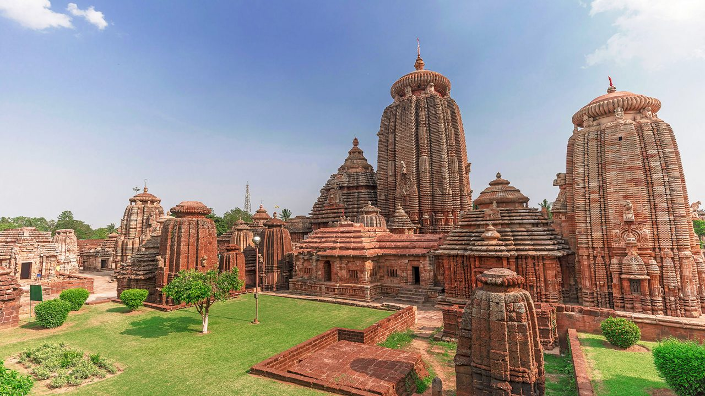
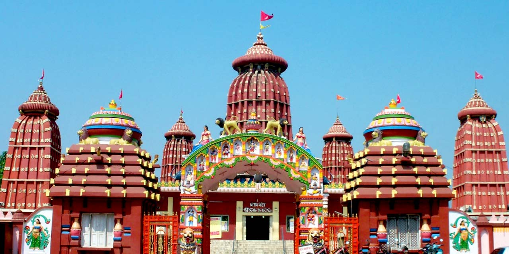
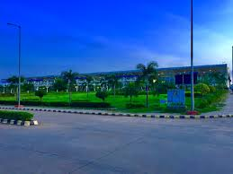
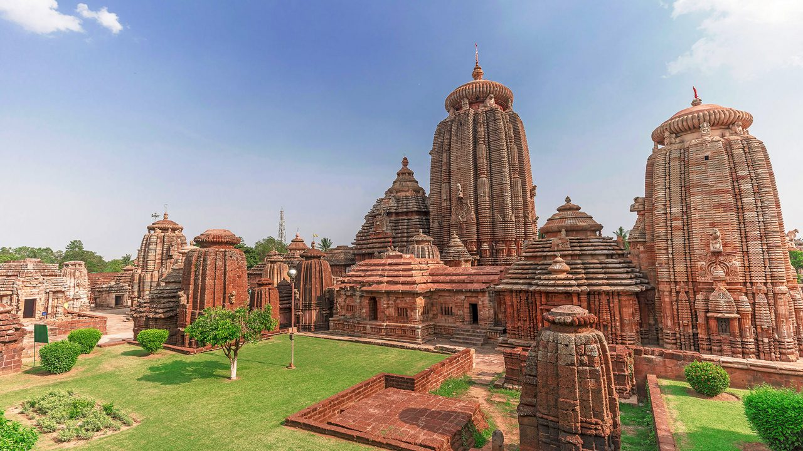
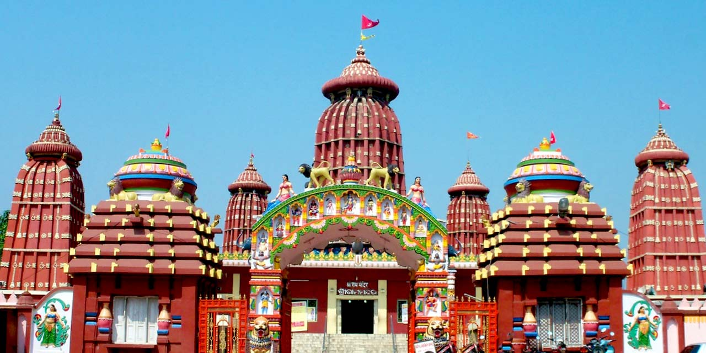
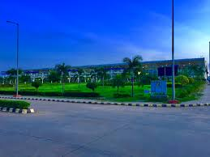
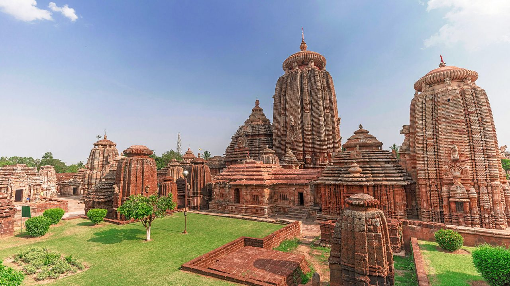
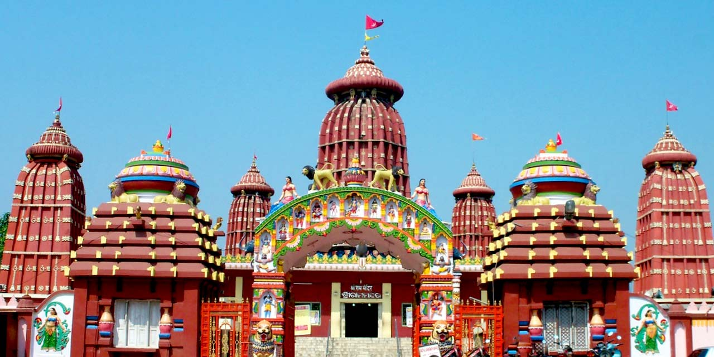
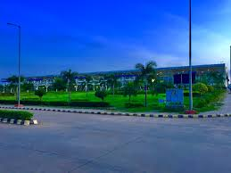

©2025 Rupashree.All Rights Reserved
Bhubaneswar is the capital and the largest city of the Indian state of Odisha. It is located in the Khordha district. The suburban region, especially the old town, was historically often depicted as Chakra Khetra and Ekamra Khetra (Area adorned with a mango tree). Bhubaneswar is dubbed the "Temple City", a nickname earned because of many temples which are standing there. In contemporary times, the city is a hub of sports, tourism and IT in the country.Bhubaneswar is also a rapidly growing city with well-planned infrastructure, emerging IT hubs, and educational institutions, making it a center for commerce, education, and technology in eastern India. The city is surrounded by lush greenery and lies close to natural attractions like the Chandaka Wildlife Sanctuary and the picturesque Dhauli Hills, which hold historical significance as the site of Emperor Ashoka's transformation to Buddhism. With its unique combination of tradition and modernity, Bhubaneswar offers a rich cultural experience, a thriving culinary scene, and a warm, welcoming vibe, making it one of India's most livable cities.



©2025 Rupashree.All Rights Reserved